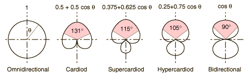

Directional Patterns of Microphones

| Characteristic | Omnidirectional | Cardioid | Supercardioid | Hypercardioid | Bidirectional |
Pickup arc
3 dB down | ... | 131° | 115° | 105° | 90° |
Pickup arc
6 dB down | ... | 180° | 156° | 141° | 120° |
Relative output at
90° in dB | 0 | -6 | -8.5 | -12 | -inf |
Relative output at
180° in dB | 0 | -inf | -12 | -6 | 0 |
Angle at which
output = 0 | ... | 180° | 127° | 110° | 90° |
The variety of directional patterns are often characterized by the arc within which they pick up at least half the peak value. In decibels, a drop of 3 dB represents half the power and 6 dB down is one fourth the power.
With any of the microphone mechanisms, different directional patterns of response can be produced. Common directional patterns are called cardiod (for heart shaped) and omnidirectional. There are also "figure-eight" patterns which accept sound from front and rear. The parabolic microphone is unidirectional in the extreme!
One directional technique used is the "stereo microphone" which may be constructed from two condenser microphones attached to each other so that their peak response directions are 90° apart. Although stereo effects may be obtained with two separate microphones, the stereo pair offers a way to get some stereo effect with a single microphone placement.
|